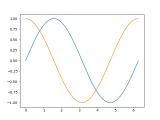
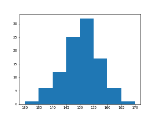
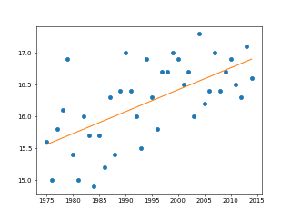
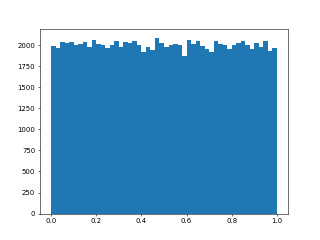
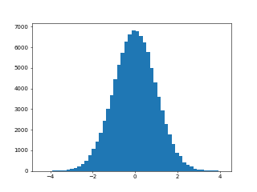

python -m pip install numpy
import numpy as np
pip install matplotlib
リスト : numpy と matplotlib の簡単な使用例
import math
import numpy as np
import matplotlib.pyplot as plt
x = np.linspace(0, 2 * np.pi, 100)
plt.plot(x, np.sin(x))
plt.plot(x, np.cos(x))
# plt.savefig("testplt.png", dpi=50)
plt.show()

>>> import numpy as np
>>> a = np.array([[1, 2, 3], [4, 5, 6], [7, 8, 9]])
>>> a
array([[1, 2, 3],
[4, 5, 6],
[7, 8, 9]])
>>> a.dtype
dtype('int32')
>>> b = np.array([1, 2, 3, 4, 5], np.float_)
>>> b
array([1., 2., 3., 4., 5.])
>>> b.dtype
dtype('float64')
>>> c = np.array([1, 2, 3, 4, 5], 'u1')
>>> c
array([1, 2, 3, 4, 5], dtype=uint8)
>>> d = np.array([1, 2, 3, 4], dtype = np.complex_)
>>> d
array([1.+0.j, 2.+0.j, 3.+0.j, 4.+0.j])
>>> a.flags C_CONTIGUOUS : True F_CONTIGUOUS : False OWNDATA : True WRITEABLE : True ALIGNED : True WRITEBACKIFCOPY : False UPDATEIFCOPY : False >>> a.ndim 2 >>> a.size 9 >>> a.shape (3, 3) >>> a.itemsize 4 >>> a.strides (12, 4) >>> a.nbytes 36
>>> np.zeros(4)
array([0., 0., 0., 0.])
>>> np.zeros((3, 3), 'i')
array([[0, 0, 0],
[0, 0, 0],
[0, 0, 0]], dtype=int32)
>>> np.ones((2, 2, 2), 'i')
array([[[1, 1],
[1, 1]],
[[1, 1],
[1, 1]]], dtype=int32)
>>> np.empty(5)
array([0., 0., 0., 0., 0.])
>>> np.arange(10)
array([0, 1, 2, 3, 4, 5, 6, 7, 8, 9])
>>> np.arange(0, 10, 2)
array([0, 2, 4, 6, 8])
>>> np.linspace(1, 10, 10)
array([ 1., 2., 3., 4., 5., 6., 7., 8., 9., 10.])
>>> np.linspace(0, 1, 9)
array([0. , 0.125, 0.25 , 0.375, 0.5 , 0.625, 0.75 , 0.875, 1. ])
>>> np.linspace(0, 1, 11)
array([0. , 0.1, 0.2, 0.3, 0.4, 0.5, 0.6, 0.7, 0.8, 0.9, 1. ])
>>> np.tile([1, 2, 3], 4)
array([1, 2, 3, 1, 2, 3, 1, 2, 3, 1, 2, 3])
>>> np.identity(3)
array([[1., 0., 0.],
[0., 1., 0.],
[0., 0., 1.]])
>>> np.eye(3, 4)
array([[1., 0., 0., 0.],
[0., 1., 0., 0.],
[0., 0., 1., 0.]])
>>> np.tri(4)
array([[1., 0., 0., 0.],
[1., 1., 0., 0.],
[1., 1., 1., 0.],
[1., 1., 1., 1.]])
>>> np.diag(np.tri(4))
array([1., 1., 1., 1.])
>>> np.diag([1, 1, 1])
array([[1, 0, 0],
[0, 1, 0],
[0, 0, 1]])
>>> np.fromfunction(lambda x: x, (10,), dtype='int_')
array([0, 1, 2, 3, 4, 5, 6, 7, 8, 9])
>>> np.fromfunction(lambda x, y: x + y, (4, 4), dtype='int_')
array([[0, 1, 2, 3],
[1, 2, 3, 4],
[2, 3, 4, 5],
[3, 4, 5, 6]])
>>> xs = np.arange(10)
>>> xs
array([0, 1, 2, 3, 4, 5, 6, 7, 8, 9])
>>> xs[0]
0
>>> xs[9]
9
>>> xs[2:8]
array([2, 3, 4, 5, 6, 7])
>>> xs[::2] = 0
>>> xs
array([0, 1, 0, 3, 0, 5, 0, 7, 0, 9])
>>> a
array([[1, 2, 3],
[4, 5, 6],
[7, 8, 9]])
>>> a[0]
array([1, 2, 3])
>>> a[0, 0]
1
>>> a[2]
array([7, 8, 9])
>>> a[2, 2]
9
>>> a[:2, :2]
array([[1, 2],
[4, 5]])
>>> a[1:, 1:]
array([[5, 6],
[8, 9]])
>>> a[1:, :]
array([[4, 5, 6],
[7, 8, 9]])
>>> a[1, 1] = 100
>>> a
array([[ 1, 2, 3],
[ 4, 100, 6],
[ 7, 8, 9]])
>>> a[:2, :2] = 0
>>> a
array([[0, 0, 3],
[0, 0, 6],
[7, 8, 9]])
>>> a[:2, :2] = np.array([[10, 20], [40, 50]])
>>> a
array([[10, 20, 3],
[40, 50, 6],
[ 7, 8, 9]])
>>> a = np.array([[1, 2, 3], [4, 5, 6]])
>>> a
array([[1, 2, 3],
[4, 5, 6]])
>>> a + 10
array([[11, 12, 13],
[14, 15, 16]])
>>> a * 10
array([[10, 20, 30],
[40, 50, 60]])
>>> a - 10
array([[-9, -8, -7],
[-6, -5, -4]])
>>> a / 10
array([[0.1, 0.2, 0.3],
[0.4, 0.5, 0.6]])
>>> b = np.array([[3, 2, 1], [6, 5, 4]])
>>> b
array([[3, 2, 1],
[6, 5, 4]])
>>> a + b
array([[ 4, 4, 4],
[10, 10, 10]])
>>> a - b
array([[-2, 0, 2],
[-2, 0, 2]])
>>> a * b
array([[ 3, 4, 3],
[24, 25, 24]])
>>> a / b
array([[0.33333333, 1. , 3. ],
[0.66666667, 1. , 1.5 ]])
>>> b.T
array([[3, 6],
[2, 5],
[1, 4]])
>>> c = a @ b.T
>>> c
array([[10, 28],
[28, 73]])
>>> i = np.identity(2, 'int')
>>> i
array([[1, 0],
[0, 1]])
>>> c @ i
array([[10, 28],
[28, 73]])
>>> i @ c
array([[10, 28],
[28, 73]])
>>> x = np.array([1, 2, 3])
>>> y = np.array([4, 5, 6])
>>> x @ y
32
>>> x.dot(y)
32
>>> np.vdot(x, y)
32
>>> z = np.array([[1, 2, 3], [4, 5, 6], [7, 8, 9]])
>>> z
array([[1, 2, 3],
[4, 5, 6],
[7, 8, 9]])
>>> z @ x
array([14, 32, 50])
>>> f = np.matrix([[1, 1], [1, 0]], 'int64')
>>> f
matrix([[1, 1],
[1, 0]], dtype=int64)
>>> np.array(f)
array([[1, 1],
[1, 0]], dtype=int64)
>>> f.A
array([[1, 1],
[1, 0]], dtype=int64)
>>> np.matrix(f.A)
matrix([[1, 1],
[1, 0]], dtype=int64)
>>> f ** 10
matrix([[89, 55],
[55, 34]], dtype=int64)
>>> f ** 20
matrix([[10946, 6765],
[ 6765, 4181]], dtype=int64)
>>> f ** 40
matrix([[165580141, 102334155],
[102334155, 63245986]], dtype=int64)
>>> def fibo(n):
... if n == 0 or n == 1: return n
... else:
... f = np.matrix([[1, 1], [1, 0]], 'int64')
... return (f ** (n - 1))[0, 0]
...
>>> for x in range(20): print(fibo(x))
...
0
1
1
2
3
5
8
13
21
34
55
89
144
233
377
610
987
1597
2584
4181
>>> fibo(40)
102334155
>>> fibo(50)
12586269025
>>> fibo(60)
1548008755920
リスト : 数値積分 (中点則で円周率を求める)
import numpy as np
n = 100
for _ in range(5):
w = 1 / n
a = (np.arange(1, n + 1) - 0.5) * w
b = 4.0 / (1.0 + a * a)
print(n, np.sum(b) * w)
n *= 10
C>python test.py 100 3.1416009869231245 1000 3.1415927369231267 10000 3.1415926544231265 100000 3.1415926535981273 1000000 3.1415926535898775
A.astype(type), 配列 A の要素のデータ型を type に変更した新しい配列を返す A.reshape(shape), 配列 A の形状を shape に変更した View を返す (値はコピーされない) A.resize(shape), 配列 A の形状を shape に変更する (破壊的な修正) A.flatten(), A.flat, 配列 A の平坦化
>>> a = np.arange(1, 10)
>>> a
array([1, 2, 3, 4, 5, 6, 7, 8, 9])
>>> b = a.reshape((3, 3))
>>> b
array([[1, 2, 3],
[4, 5, 6],
[7, 8, 9]])
>>> b[0, 0] += 10
>>> a
array([11, 2, 3, 4, 5, 6, 7, 8, 9])
>>> b
array([[11, 2, 3],
[ 4, 5, 6],
[ 7, 8, 9]])
>>> a[8] += 20
>>> a
array([11, 2, 3, 4, 5, 6, 7, 8, 29])
>>> b
array([[11, 2, 3],
[ 4, 5, 6],
[ 7, 8, 29]])
>>> c = np.arange(1, 10)
>>> c
array([1, 2, 3, 4, 5, 6, 7, 8, 9])
>>> c.resize((3, 3))
>>> c
array([[1, 2, 3],
[4, 5, 6],
[7, 8, 9]])
>>> d = c.flatten()
>>> d
array([1, 2, 3, 4, 5, 6, 7, 8, 9])
>>> c
array([[1, 2, 3],
[4, 5, 6],
[7, 8, 9]])
>>> d[0] = 10
>>> d
array([10, 2, 3, 4, 5, 6, 7, 8, 9])
>>> c
array([[1, 2, 3],
[4, 5, 6],
[7, 8, 9]])
>>> d
array([10, 2, 3, 4, 5, 6, 7, 8, 9])
>>> e = d.astype(np.float_)
>>> e
array([10., 2., 3., 4., 5., 6., 7., 8., 9.])
>>> a = np.arange(1, 10)
>>> a
array([1, 2, 3, 4, 5, 6, 7, 8, 9])
>>> a.shape = 3, 3
>>> a
array([[1, 2, 3],
[4, 5, 6],
[7, 8, 9]])
>>> a.shape = 9
>>> a
array([1, 2, 3, 4, 5, 6, 7, 8, 9])
>>> a.shape = 3,-1
>>> a
array([[1, 2, 3],
[4, 5, 6],
[7, 8, 9]])
>>> b = np.arange(1, 9)
>>> b
array([1, 2, 3, 4, 5, 6, 7, 8])
>>> b.shape = 2, 4
>>> b
array([[1, 2, 3, 4],
[5, 6, 7, 8]])
>>> b.shape = 2, 2, -1
>>> b
array([[[1, 2],
[3, 4]],
[[5, 6],
[7, 8]]])
>>> a = np.array([1,2,3])
>>> a
array([1, 2, 3])
>>> a.shape
(3,)
>>> b = a[np.newaxis, :]
>>> b
array([[1, 2, 3]])
>>> b.shape
(1, 3)
>>> c = a[:, np.newaxis]
>>> c
array([[1],
[2],
[3]])
>>> c.shape
(3, 1)
>>> d = np.arange(8).reshape(2,2,2)
>>> d
array([[[0, 1],
[2, 3]],
[[4, 5],
[6, 7]]])
>>> d[..., 0]
array([[0, 2],
[4, 6]])
>>> d[1, ...]
array([[4, 5],
[6, 7]])
>>> a = np.array([9, 8, 7, 6, 5, 4, 3, 2, 1])
>>> a
array([9, 8, 7, 6, 5, 4, 3, 2, 1])
>>> a[[5, 1, 3]]
array([4, 8, 6])
>>> b = a.reshape(3, 3)
>>> b
array([[9, 8, 7],
[6, 5, 4],
[3, 2, 1]])
>>> b[([0, 1, 2], [2, 1, 0])]
array([7, 5, 3])
>>> b[[0, 1, 2], [2, 1, 0]]
array([7, 5, 3])
>>> x = a % 2 == 0
>>> x
array([False, True, False, True, False, True, False, True, False])
>>> a[x]
array([8, 6, 4, 2])
>>> y = b > 4
>>> y
array([[ True, True, True],
[ True, True, False],
[False, False, False]])
>>> b[y]
array([9, 8, 7, 6, 5])
>>> b[b % 2 != 0]
array([9, 7, 5, 3, 1])
>>> c = np.arange(9).reshape((3, 3))
>>> c
array([[0, 1, 2],
[3, 4, 5],
[6, 7, 8]])
>>> c[c % 2 == 0] = 0
>>> c
array([[0, 1, 0],
[3, 0, 5],
[0, 7, 0]])
リスト : 素数 (prime.py)
import numpy as np
import time
# Python のリストを使用する
def prime(n):
ps = [2]
xs = list(range(3, n + 1, 2))
while True:
p = xs[0]
if p * p > n:
return ps + xs
ps.append(p)
xs = list(filter(lambda x: x % p != 0, xs))
# NumPy バージョン
def prime_np(n):
ps = [2]
xs = np.arange(3, n + 1, 2)
while True:
p = xs[0]
if p * p > n:
return ps + list(xs)
ps.append(p)
xs = xs[xs % p != 0]
s = time.time()
print(len(prime(1000000)))
print(time.time() - s)
s = time.time()
print(len(prime_np(1000000)))
print(time.time() - s)
C>python prime.py 78498 2.76664662361145 78498 0.1401984691619873 実行環境 : Windows 10, Intel Core i5-6200U 2.30GHz
>>> a = np.arange(10)
>>> a
array([0, 1, 2, 3, 4, 5, 6, 7, 8, 9])
>>> np.square(a)
array([ 0, 1, 4, 9, 16, 25, 36, 49, 64, 81], dtype=int32)
>>> np.sqrt(a)
array([0. , 1. , 1.41421356, 1.73205081, 2. ,
2.23606798, 2.44948974, 2.64575131, 2.82842712, 3. ])
>>> b = np.linspace(0, np.pi/2, 7)
>>> b
array([0. , 0.26179939, 0.52359878, 0.78539816, 1.04719755,
1.30899694, 1.57079633])
>>> np.sin(b)
array([0. , 0.25881905, 0.5 , 0.70710678, 0.8660254 ,
0.96592583, 1. ])
frompyfunc(関数, 引数の個数, 返り値の個数) => ufunc
リスト : frompyfunc() の簡単な使用例 (test.py) import time, math import numpy as np def mysqrt(n): return math.sqrt(n) ufunc_mysqrt = np.frompyfunc(mysqrt, 1, 1) s = time.time() np.sqrt(np.arange(10000000)) print(time.time() - s) s = time.time() ufunc_mysqrt(np.arange(10000000)) print(time.time() - s)
C>python test.py 0.06250596046447754 2.765178680419922 実行環境 : Windows 10, Intel Core i5-6200U 2.30GHz
ufunc.reduce(A, axis=0) ufunc.accumulate(A, axis=0)
>>> a = np.arange(1, 10)
>>> a
array([1, 2, 3, 4, 5, 6, 7, 8, 9])
>>> np.add.reduce(a)
45
>>> np.add.accumulate(a)
array([ 1, 3, 6, 10, 15, 21, 28, 36, 45], dtype=int32)
>>> np.multiply.reduce(a)
362880
>>> np.multiply.accumulate(a)
array([ 1, 2, 6, 24, 120, 720, 5040, 40320,
362880], dtype=int32)
>>> b = np.arange(1, 26).reshape((5, 5))
>>> b
array([[ 1, 2, 3, 4, 5],
[ 6, 7, 8, 9, 10],
[11, 12, 13, 14, 15],
[16, 17, 18, 19, 20],
[21, 22, 23, 24, 25]])
>>> np.add.reduce(b, axis=0)
array([55, 60, 65, 70, 75])
>>> np.add.reduce(b, axis=1)
array([ 15, 40, 65, 90, 115])
>>> c = np.arange(1, 28).reshape((3, 3, 3))
>>> c
array([[[ 1, 2, 3],
[ 4, 5, 6],
[ 7, 8, 9]],
[[10, 11, 12],
[13, 14, 15],
[16, 17, 18]],
[[19, 20, 21],
[22, 23, 24],
[25, 26, 27]]])
>>> np.add.reduce(c, axis=0)
array([[30, 33, 36],
[39, 42, 45],
[48, 51, 54]])
>>> c[0,...] + c[1,...] + c[2,...]
array([[30, 33, 36],
[39, 42, 45],
[48, 51, 54]])
>>> np.add.reduce(c, axis=2)
array([[ 6, 15, 24],
[33, 42, 51],
[60, 69, 78]])
>>> c[...,0] + c[...,1] + c[...,2]
array([[ 6, 15, 24],
[33, 42, 51],
[60, 69, 78]])
>>> a = np.array([0, 1, 2, 4, 3, 4, 2, 1, 0])
>>> a
array([0, 1, 2, 4, 3, 4, 2, 1, 0])
>>> a.argmin()
0
>>> a.argmax()
3
>>> b = a.reshape((3,3))
>>> b
array([[0, 1, 2],
[4, 3, 4],
[2, 1, 0]])
>>> b.argmin(axis=0)
array([0, 0, 2], dtype=int64)
>>> b.argmin(axis=1)
array([0, 1, 2], dtype=int64)
>>> b.argmax(axis=0)
array([1, 1, 1], dtype=int64)
>>> b.argmax(axis=1)
array([2, 0, 0], dtype=int64)
>>> a.nonzero()
(array([1, 2, 3, 4, 5, 6, 7], dtype=int64),)
>>> b.nonzero()
(array([0, 0, 1, 1, 1, 2, 2], dtype=int64), array([1, 2, 0, 1, 2, 0, 1], dtype=int64))
>>> np.where(a % 2 == 0)
(array([0, 2, 3, 5, 6, 8], dtype=int64),)
>>> np.where(b % 2 == 1)
(array([0, 1, 2], dtype=int64), array([1, 1, 1], dtype=int64))
>>> c = np.where(b % 2 == 1,b,b+ 1)
>>> c
array([[1, 1, 3],
[5, 3, 5],
[3, 1, 1]])
>>> np.all(a)
False
>>> np.any(a)
True
>>> np.any(np.array([0, 0, 0, 0, 0]))
False
>>> np.all(b)
False
>>> np.all(b, axis=0)
array([False, True, False])
>>> np.all(c)
True
>>> np.all(c, axis=0)
array([ True, True, True])
リスト : エラトステネスの篩 (sieve.py)
import numpy as np
import time
# Python のリストを使用
def sieve(n):
ps = [True] * (n + 1)
ps[0] = False
ps[1] = False
for i in range(2 + 2, n + 1, 2): ps[i] = False
x = 3
while x * x <= n:
if ps[x]:
for i in range(x + x, n + 1, x): ps[i] = False
x += 2
for i in range(2, n + 1):
if ps[i]: yield i
# NumPy バージョン
def sieve_np(n):
ps = np.ones(n + 1, 'u1')
ps[0] = 0
ps[1] = 0
ps[2+2::2] = 0
x = 3
while x * x <= n:
if ps[x]: ps[x + x::x] = 0
x += 2
return np.where(ps == 1)[0]
s = time.time()
print(len(list(sieve(10000000))))
print(time.time() - s)
print(sieve_np(100))
s = time.time()
print(len(sieve_np(10000000)))
print(time.time() - s)
C>python sieve.py [2, 3, 5, 7, 11, 13, 17, 19, 23, 29, 31, 37, 41, 43, 47, 53, 59, 61, 67, 71, 73, 79, 83, 89, 97] 664579 2.124438762664795 [ 2 3 5 7 11 13 17 19 23 29 31 37 41 43 47 53 59 61 67 71 73 79 83 89 97] 664579 0.15421748161315918 実行環境 : Windows 10, Intel Core i5-6200U 2.30GHz
リスト : ナンバープレースの解法 (numplace.py)
import numpy as np
# 問題 (出典: 数独 - Wikipedia の問題例)
sudoku_board = np.array([
[5, 3, 0, 0, 7, 0, 0, 0, 0],
[6, 0, 0, 1, 9, 5, 0, 0, 0],
[0, 9, 8, 0, 0, 0, 0, 6, 0],
[8, 0, 0, 0, 6, 0, 0, 0, 3],
[4, 0, 0, 8, 0, 3, 0, 0, 1],
[7, 0, 0, 0, 2, 0, 0, 0, 6],
[0, 6, 0, 0, 0, 0, 2, 8, 0],
[0, 0, 0, 4, 1, 9, 0, 0, 5],
[0, 0, 0, 0, 8, 0, 0, 7, 9]
])
# 条件のチェック
def check_number(x, y, n, board):
if np.any(board[x, :] == n) or np.any(board[:, y] == n):
return False
x1 = (x // 3) * 3
y1 = (y // 3) * 3
if np.any(board[x1:x1+3, y1:y1+3] == n):
return False
return True
# 深さ優先探索による解法
def numplace(x, y, board):
if y >= 9:
print(board)
elif x >= 9:
numplace(0, y + 1, board)
elif board[x, y]:
numplace(x + 1, y, board)
else:
for n in range(1, 10):
if not check_number(x, y, n, board): continue
board[x, y] = n
numplace(x + 1, y, board)
board[x, y] = 0
print(sudoku_board)
print('----------')
numplace(0, 0, sudoku_board)
C>python numplace.py [[5 3 0 0 7 0 0 0 0] [6 0 0 1 9 5 0 0 0] [0 9 8 0 0 0 0 6 0] [8 0 0 0 6 0 0 0 3] [4 0 0 8 0 3 0 0 1] [7 0 0 0 2 0 0 0 6] [0 6 0 0 0 0 2 8 0] [0 0 0 4 1 9 0 0 5] [0 0 0 0 8 0 0 7 9]] ---------- [[5 3 4 6 7 8 9 1 2] [6 7 2 1 9 5 3 4 8] [1 9 8 3 4 2 5 6 7] [8 5 9 7 6 1 4 2 3] [4 2 6 8 5 3 7 9 1] [7 1 3 9 2 4 8 5 6] [9 6 1 5 3 7 2 8 4] [2 8 7 4 1 9 6 3 5] [3 4 5 2 8 6 1 7 9]]
>>> a = np.array([[1, 2, 3], [4, 5, 6], [7, 8, 9]])
>>> a
array([[1, 2, 3],
[4, 5, 6],
[7, 8, 9]])
>>> a.sum()
45
>>> np.sum(a)
45
>>> np.sum(a, axis=0)
array([12, 15, 18])
>>> np.sum(a, axis=1)
array([ 6, 15, 24])
>>> np.min(a, axis=1)
array([1, 4, 7])
>>> np.max(a, axis=1)
array([3, 6, 9])
リスト : 統計処理の簡単な例
import numpy as np
import matplotlib.pyplot as plt
# 身長のデータ
height = [
148.7, 149.5, 133.7, 157.9, 154.2, 147.8, 154.6, 159.1, 148.2, 153.1,
138.2, 138.7, 143.5, 153.2, 150.2, 157.3, 145.1, 157.2, 152.3, 148.3,
152.0, 146.0, 151.5, 139.4, 158.8, 147.6, 144.0, 145.8, 155.4, 155.5,
153.6, 138.5, 147.1, 149.6, 160.9, 148.9, 157.5, 155.1, 138.9, 153.0,
153.9, 150.9, 144.4, 160.3, 153.4, 163.0, 150.9, 153.3, 146.6, 153.3,
152.3, 153.3, 142.8, 149.0, 149.4, 156.5, 141.7, 146.2, 151.0, 156.5,
150.8, 141.0, 149.0, 163.2, 144.1, 147.1, 167.9, 155.3, 142.9, 148.7,
164.8, 154.1, 150.4, 154.2, 161.4, 155.0, 146.8, 154.2, 152.7, 149.7,
151.5, 154.5, 156.8, 150.3, 143.2, 149.5, 145.6, 140.4, 136.5, 146.9,
158.9, 144.4, 148.1, 155.5, 152.4, 153.3, 142.3, 155.3, 153.1, 152.3
]
h = np.array(height)
print('sum = {}, max = {}, min = {}'.format(h.sum(), h.max(), h.min()))
print('mean = {}, var = {}, std = {}'.format(h.mean(), h.var(), h.std()))
print(np.histogram(h, bins=np.arange(130, 171, 5)))
print(plt.hist(h, bins=np.arange(130, 171, 5)))
# plt.savefig("hist.png", dpi=50)
plt.show()
sum = 15062.699999999999, max = 167.9, min = 133.7 mean = 150.62699999999998, var = 41.389571000000025, std = 6.433472701426503 (array([ 1, 6, 12, 25, 32, 17, 6, 1], dtype=int64), array([130, 135, 140, 145, 150, 155, 160, 165, 170])) (array([ 1., 6., 12., 25., 32., 17., 6., 1.]), array([130, 135, 140, 145, 150, 155, 160, 165, 170]), <a list of 8 Patch objects>)

リスト : 東京の年平均気温 (1975 - 2014)
import numpy as np
import matplotlib.pyplot as plt
data = np.array([
15.6, 15.0, 15.8, 16.1, 16.9, 15.4, 15.0, 16.0, 15.7, 14.9,
15.7, 15.2, 16.3, 15.4, 16.4, 17.0, 16.4, 16.0, 15.5, 16.9,
16.3, 15.8, 16.7, 16.7, 17.0, 16.9, 16.5, 16.7, 16.0, 17.3,
16.2, 16.4, 17.0, 16.4, 16.7, 16.9, 16.5, 16.3, 17.1, 16.6
])
x = np.arange(1975, 2015)
# 散布図
plt.plot(x, data, 'o')
# 相関係数
print(np.corrcoef(x, data))
# 回帰直線
a, b = np.polyfit(x, data, 1)
print(a, b)
plt.plot(x, x * a + b)
# plt.savefig('tokyo.png', dpi=50)
plt.show()
[[1. 0.62750348] [0.62750348 1. ]] 0.03442776735459678 -52.43618198874326

>>> np.random.rand()
0.047653528033401504
>>> np.random.rand(10)
array([0.7378687 , 0.24128895, 0.70803174, 0.70097538, 0.39710067,
0.18238028, 0.7943424 , 0.12147911, 0.51665823, 0.68891523])
>>> np.random.randn()
-0.3073797959407569
>>> np.random.randn(10)
array([ 0.79187796, 0.00350009, -0.01247469, -0.59927661, -0.35585297,
0.81813222, -0.09386419, -1.58999999, -1.43327989, -2.98426565])
>>> np.random.randint(0, 10)
7
>>> np.random.randint(0, 10, 20)
array([8, 9, 2, 5, 7, 9, 9, 9, 0, 1, 4, 4, 7, 2, 0, 4, 3, 9, 2, 9])
>>> np.random.randint(0, 10, (5, 5))
array([[0, 7, 7, 4, 3],
[6, 0, 3, 1, 5],
[6, 1, 0, 8, 4],
[3, 2, 3, 9, 7],
[7, 4, 1, 5, 9]])
リスト : 一様分布
import numpy as np
import matplotlib.pyplot as plt
a = np.random.rand(100000)
plt.hist(a, bins=50)
# plt.savefig('rand.png', dpi=50)
plt.show()

リスト : 正規分布
import numpy as np
import matplotlib.pyplot as plt
a = np.random.randn(100000)
plt.hist(a, bins=50)
# plt.savefig('randn.png', dpi=50)
plt.show()

リスト : モンテカルロ法で円周率を求める (test.py) import numpy as np n = 1000000 x, y = np.random.rand(2, n) c = x ** 2 + y ** 2 <= 1 print(len(x[c]) / n * 4.0)
C>python test.py 3.142276
>>> a = ['foo', 'bar', 'baz', 'oops']
>>> a
['foo', 'bar', 'baz', 'oops']
>>> np.random.choice(a)
'oops'
>>> np.random.choice(a)
'oops'
>>> np.random.choice(a)
'foo'
>>> np.random.choice(a, 2)
array(['bar', 'foo'], dtype='<U4')
>>> np.random.choice(a, 2)
array(['oops', 'foo'], dtype='<U4')
>>> np.random.choice(a, p=[1/2, 1/6, 1/6, 1/6])
'foo'
>>> np.random.choice(a, p=[1/2, 1/6, 1/6, 1/6])
'oops'
>>> np.random.choice(a, p=[1/2, 1/6, 1/6, 1/6])
'foo'
>>> np.random.choice(a, p=[1/2, 1/6, 1/6, 1/6])
'foo'
>>> np.random.choice(a, p=[1/2, 1/6, 1/6, 1/6])
'baz'
>>> b = np.arange(10)
>>> b
array([0, 1, 2, 3, 4, 5, 6, 7, 8, 9])
>>> np.random.shuffle(b)
>>> b
array([0, 2, 8, 5, 7, 1, 4, 6, 3, 9])
>>> np.random.shuffle(b)
>>> b
array([7, 8, 6, 1, 4, 9, 0, 3, 2, 5])
>>> np.random.seed(0)
>>> np.random.rand(10)
array([0.5488135 , 0.71518937, 0.60276338, 0.54488318, 0.4236548 ,
0.64589411, 0.43758721, 0.891773 , 0.96366276, 0.38344152])
>>> np.random.seed(0)
>>> np.random.rand(10)
array([0.5488135 , 0.71518937, 0.60276338, 0.54488318, 0.4236548 ,
0.64589411, 0.43758721, 0.891773 , 0.96366276, 0.38344152])